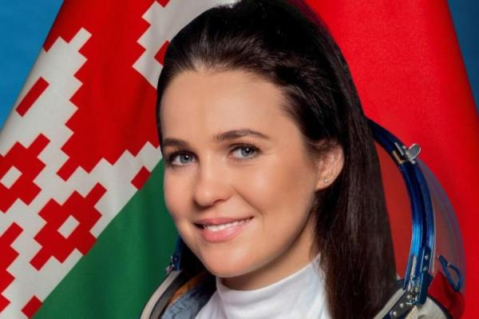

Марина Василевская
23 марта 2024 года

Марина Василевская стала первой гражданкой Беларуси, достигшей околоземной орбиты в составе экипажа космического корабля "Союз МС-25"
Российский космический корабль "Союз МС-25" успешно стартовал к МКС с космодрома Байконур в Казахстане. В составе экипажа - Марина Василевская, первая белорусская женщина, которая побывала на орбите. Компанию ей составляют астронавт НАСА Трейси Колдуэлл-Дайсон и командир корабля, российский космонавт Олег Новицкий - он тоже родился в Беларуси.
Василевская - 33-летняя бортпроводница авиакомпании "Белавиа". В декабре 2022 года, в ходе конкурсного отбора, проходившего в Беларуси, она была отобрана в числе шести претенденток из более трех тысяч желающих девушек для участия в космическом полёте на российском корабле "Союз".
Запуск пилотируемого транспортного корабля "Союз МС-25" успешно состоялся в резервный день 23 марта, однако из-за этого путь до Международной космической станции растянулся на двое суток.
12-дневное пребывание Марины Василевской на МКС и возвращение экипажа на Землю обошлось без сюрпризов. Возвращаться экипажу предстояло на корабле "Союз МС-24", который был запущен к МКС еще в сентябре 2023 года.